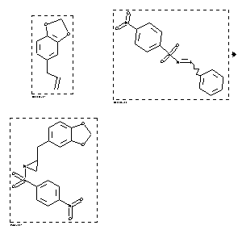

|  |
| FA | RX(1); FLST(1); RX(1) |
Reaction (1 of 1)
| Reaction ID | 8672259 |
| Reactant BRN | 136380; 6149232 |
| Reactant | 5-allyl-benzo[1,3]dioxole; [N-(p-nitrobenzenesulfonyl)imino]phenyliodinane |
| Product BRN | 8711894 |
| Product | 2-benzo[1,3]dioxol-5-ylmethyl-1-(4-nitro-benzenesulfonyl)-aziridine |
| No. of Reaction Details | 1 |
Reaction Details (1 of 1)
| Reaction Classification | Preparation |
| Reagent | CuOTf; 4 Angstroem sieves |
| Solvent | acetonitrile |
| Temperature | 0 |
| Reaction Type | Cycloaddition |
| Citation Pointer | 6267558; Journal; Dauban, Philippe; Ferry, Sandrine; Faure, Helene; Ruat, Martial; Dodd, Robert H.; BMCLE8; Bioorg.Med.Chem.Lett.; EN; 10; 17; 2000; 2001 - 2004; |
Reference (1 of 1)
| Citation Number | 6267558 |
| Document Type | Journal |
| Authors | Dauban, Philippe; Ferry, Sandrine; Faure, Helene; Ruat, Martial; Dodd, Robert H. |
| CODEN | BMCLE8 |
| Journal Title | Bioorg.Med.Chem.Lett. |
| Language Code | EN |
| (Series) Volume | 10 |
| Number | 17 |
| Publication Year | 2000 |
| Page | 2001 - 2004 |